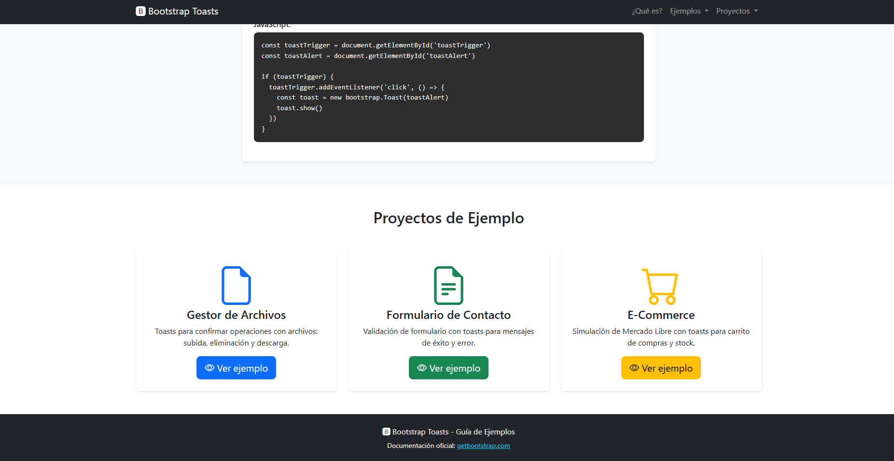
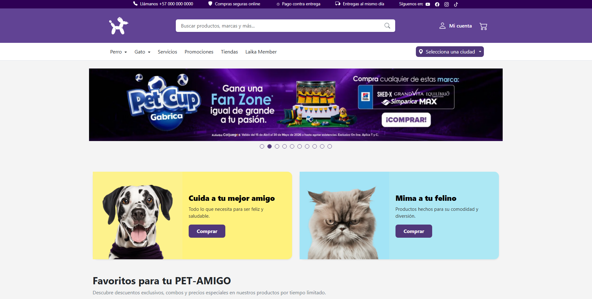
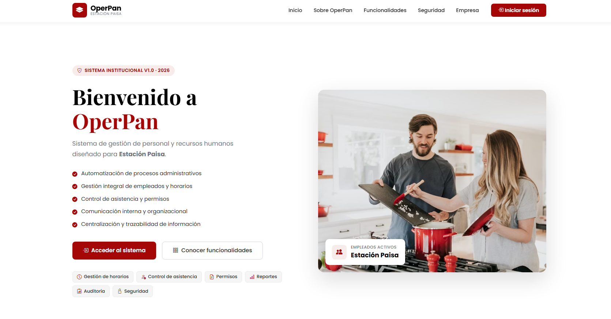
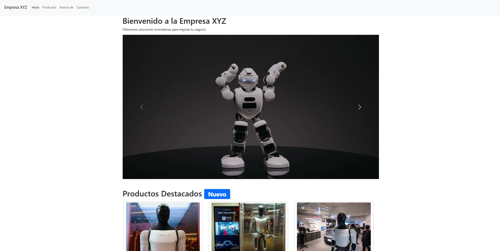
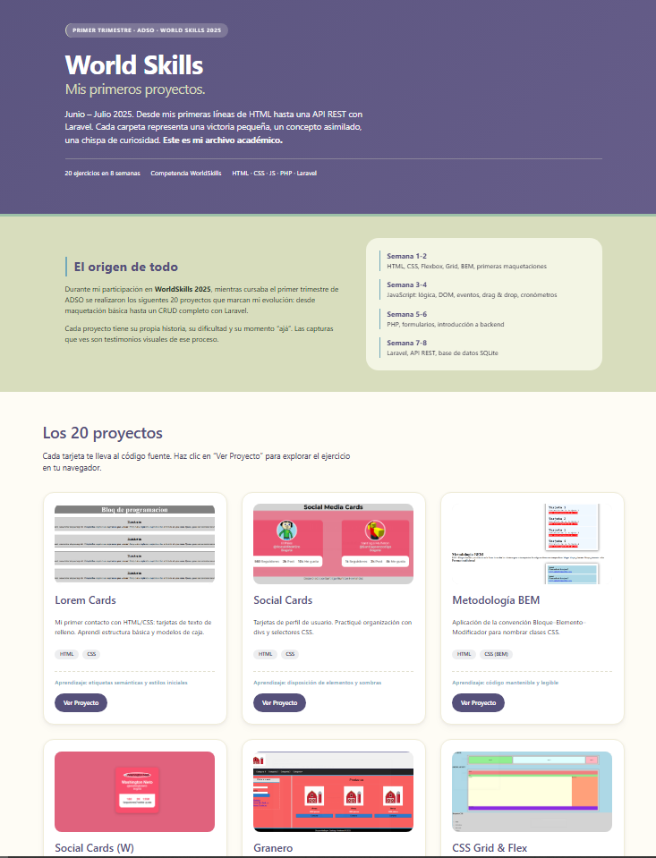
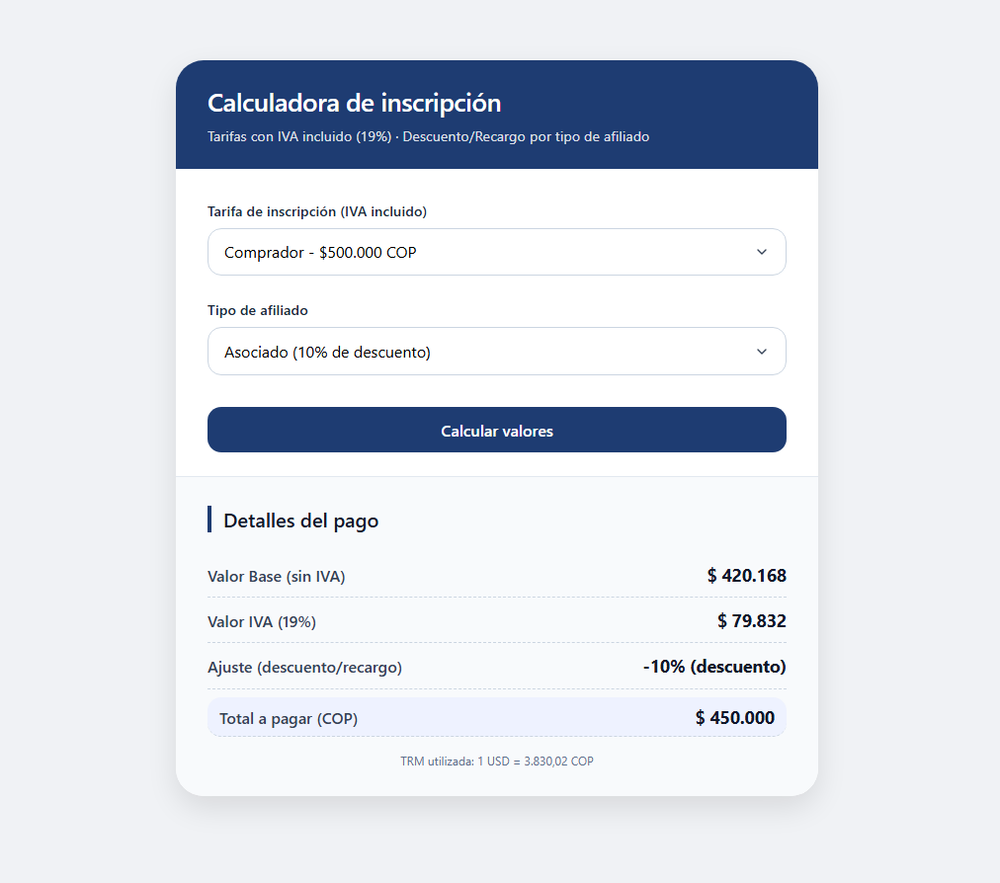

Google Workspace
Docs, Sheets y Drive para documentación, análisis y almacenamiento en la nube.
Repositorio creado por santiagoencodigo, estudiante del Tecnólogo en Análisis y Desarrollo de Software (ADSO) del Servicio Nacional de Aprendizaje (SENA).
El Tecnólogo en Análisis y Desarrollo de Software (ADSO) es un programa de formación del SENA enfocado en el diseño, construcción, pruebas y mantenimiento de sistemas de software.
Este repositorio recopila todos mis avances, proyectos y ejercicios desarrollados durante mi formación como tecnólogo en ADSO.
OBJETIVO: Documentar mi proceso de aprendizaje aplicando buenas prácticas de organización, documentación técnica y divulgación clara de los conceptos aprendidos.
Docs, Sheets y Drive para documentación, análisis y almacenamiento en la nube.
Gestión de proyectos y tareas ágiles para el seguimiento de sprints y requerimientos.
Control de versiones para el manejo eficiente del código y trabajo colaborativo.
Plataforma para alojar repositorios, compartir proyectos y gestionar versiones.
Fundamentos de programación, lógica de algoritmos e introducción al software.
Bases de datos, SQL y estructuración de la información.
Desarrollo web frontend, HTML, CSS y diseño de interfaces.
Construcción de software, backend y proyectos integradores.
Guía Completa ADSO busca servir como un recurso de consulta personal y material de apoyo para estudiantes interesados en aprender sobre análisis y desarrollo de software.
A lo largo de mi proceso formativo en el Tecnólogo en Análisis y Desarrollo de Software del SENA, he desarrollado diferentes proyectos prácticos enfocados en el diseño de interfaces web utilizando HTML y CSS. A continuación se presentan los ejercicios que documentan mi aprendizaje progresivo en maquetación y estilizado.

Estructura HTML fundamental con encabezados, párrafos, barra de navegación, imágenes de robots de Boston Dynamics, enlaces externos y tablas de datos con bordes. Primer acercamiento a las etiquetas de contenido.
Ver proyecto
Página de menú para restaurante con listas anidadas (Entradas, Platos Principales, Postres) usando viñetas circulares y cuadradas. Incluye navegación por anclas internas, lista de definiciones para platillos y enlaces de retorno al inicio.
Ver proyecto
Diseño de CV profesional utilizando tablas para organizar el encabezado con avatar y datos de contacto (Bogotá, teléfono, email). Incluye secciones de Perfil Profesional, Experiencia Laboral, Educación, Habilidades y referencias con enlace mailto.
Ver proyecto
Guía visual completa de controles de formulario HTML5. Muestra campos para texto, contraseña, email, números, teléfono, URL, búsqueda, selectores de fecha (Date, Week, Time), selector de color, slider, checkbox, radio buttons, file upload y botones.
Ver proyecto
Ejercicio clásico de layout con bloques de color: encabezado azul, área central dividida en dos columnas (columna izquierda naranja de 1/3 y columna derecha verde claro de 2/3), y pie de página rosa. Cada bloque identifica su función.
Ver proyecto
Demostración de posicionamiento CSS avanzado con elementos fixed. Presenta dos contenedores centrales (azul y verde azulado) con bordes punteados, y dos cuadros fijos en los extremos superiores que permanecen estáticos durante el scroll.
Ver proyectoCada proyecto explora diferentes técnicas de estructura, layout y diseño responsivo con HTML y CSS puro.

Primer ejercicio de maquetación web del módulo avanzado. Estructura básica con encabezado, contenido principal y pie de página.
Ver proyecto
Segundo ejercicio enfocado en la distribución de elementos mediante Flexbox. Layout flexible y adaptativo.
Ver proyecto
Tercer ejercicio con enfoque en CSS Grid. Layouts bidimensionales complejos con áreas nombradas.
Ver proyecto
Cuarto ejercicio combinando Flexbox y Grid en un mismo proyecto. Componentes híbridos y versátiles.
Ver proyecto
Quinto ejercicio orientado a diseño responsivo con media queries. Adaptación a móvil, tablet y escritorio.
Ver proyecto
Sexto ejercicio integrador que aplica todos los conceptos anteriores. Proyecto final del módulo de maquetación.
Ver proyecto
Maquetación fiel de componentes de la tienda Laika. Incluye banner "Miles de historias juntos", banner espacial "EL UNIVERSO PARA TU PET-AMIGO", grilla de servicios y banner "Días Morados" con efecto neón.
Ver proyecto
Representación abstracta de estructura HTML mediante bloques de colores sólidos. Header, Nav, Secciones, Articles y Footer. Ejercicio fundamental de arquitectura web.
Ver proyectoOtros ejercicios, maquetaciones y pruebas técnicas realizadas durante diferentes trimestres.

Implementación de notificaciones tipo Toast utilizando el framework Bootstrap.
Ver proyecto
Réplica de la interfaz de Laika utilizando exclusivamente componentes y grid de Bootstrap.
Ver proyecto
Primera versión de un sistema de gestión operativa, desarrollado como proyecto práctico.
Ver proyecto
Ejercicio de maquetación avanzada correspondiente a la sesión 6 del trimestre 5.
Ver proyecto
Proyectos y ejercicios desarrollados para la preparación en competencias World Skills.
Ver proyecto
Evaluación práctica que integra conocimientos de HTML, CSS y lógica de programación.
Ver proyecto